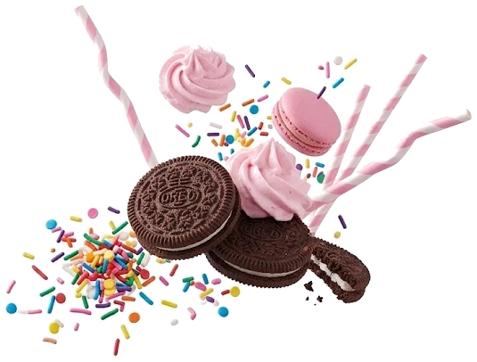
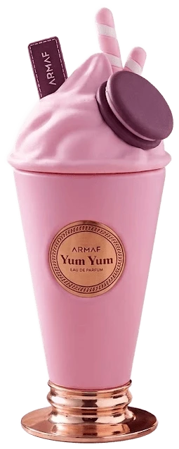

Notas de topo · os primeiros minutos

Notas de topo · os primeiros minutos
Notas de coração · depois de meia hora
Notas de fundo · o que fica na pele
↓ role para descobrir
Doce como a sua sobremesa preferida. Elegante como um perfume importado deve ser.

Armaf · Eau de Parfum · 100ml
R$ 340,00
Quero o meuBibi Perfumes Importados